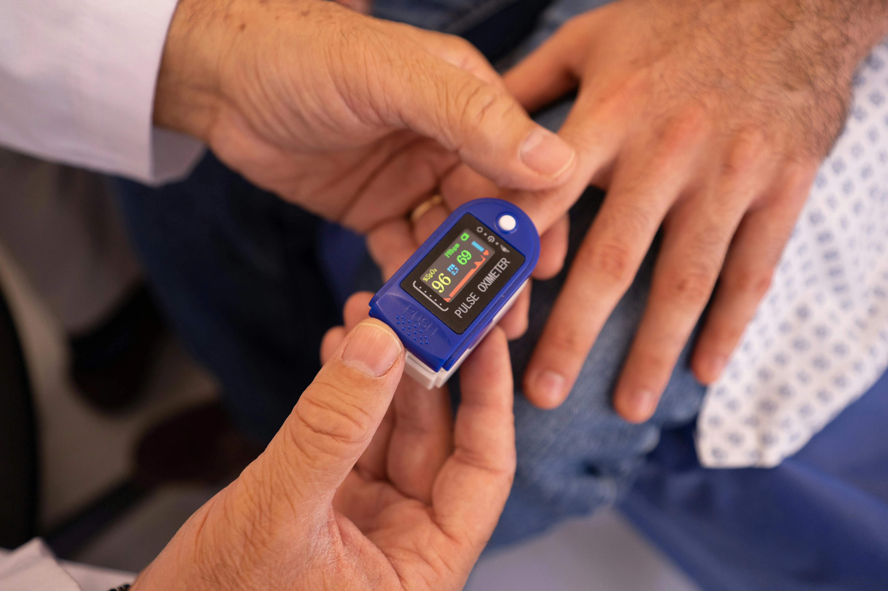

Salud digestiva y cirugía de confianza
El Instituto Médico Quirúrgico Marinelli ofrece atención especializada en gastroenterología, proctología y cirugía endoscópica, con infraestructura moderna y el respaldo de años de trayectoria en la provincia.
Especialidades médicas
Atención especializada en enfermedades digestivas, con procedimientos de diagnóstico, tratamiento y cirugía ambulatoria realizados por profesionales de trayectoria.
Servicio de Enfermedades Digestivas
Gastroenterología
Endoscopías Digestivas
Proctología
Cirugía Ambulatoria
Procedimientos del Instituto Médico Quirúrgico Marinelli
Listado completo de procedimientos diagnósticos y terapéuticos disponibles en el instituto.
Enfermedades Digestivas
- Diagnóstico y tratamientos de enfermedades digestivas
- Prevención del cáncer colorrectal
- Prevención del cáncer gástrico
Endoscopías
- Video endoscopía digestiva alta (VEDA) con video cromoendoscopía
- Videocolonoscopía (VCC) con video cromoendoscopía
- Polipectomías gástricas y colónicas
- Extracción de cuerpos extraños
- Detección del Helicobacter Pylori
Proctología
- Tratamiento endoscópico miniinvasivo ambulatorio de hemorroides
- Tratamiento ambulatorio miniinvasivo de fisura anal
- Tratamiento ambulatorio miniinvasivo de fístula perianal
- Tratamiento de condilomas acuminados con radiofrecuencia
Nuestro Equipo
Profesionales con formación y trayectoria, comprometidos con la calidad de atención en cada procedimiento.
Dr. Carlos A. Marinelli
Cirugía · Gastroenterología · Endoscopía · Proctología
Nazaria Huari Mamani
Dr. Hurtado Miguel
Romero Rosa Maricel
Servicios
Atención personalizada en gastroenterología, cirugía y proctología, con años de experiencia clínica y tecnología actualizada. Cada consulta y procedimiento se realiza con el compromiso de ofrecer un diagnóstico preciso y un tratamiento adecuado a cada paciente.
Consulta en Gastroenterología
Diagnóstico, prevención y tratamiento de enfermedades gastroenterológicas. Contamos con profesionales especializados y estudios complementarios para el cuidado del aparato digestivo.
Leer más
Videogastroscopía
Evaluación y seguimiento de trastornos gastroenterológicos, desde gastritis y úlceras hasta enfermedades del tracto digestivo. Atención personalizada y diagnóstico preciso.
Leer másVideocolonoscopía
Exploración endoscópica del colon y recto para detección temprana de pólipos, tumores y enfermedades inflamatorias del intestino grueso.
Leer más
Control y seguimiento postoperatorio
Seguimiento médico personalizado tras intervenciones quirúrgicas o procedimientos endoscópicos, garantizando una recuperación adecuada y la detección precoz de cualquier complicación.

Prevención y detección temprana de cáncer digestivo
Estudios endoscópicos orientados a la identificación precoz de lesiones precancerosas y tumores del tracto digestivo, con especial énfasis en cáncer colorrectal y gástrico.
Cirugía Ambulatoria
Procedimientos quirúrgicos programados en quirófanos propios habilitados, sin necesidad de internación.
Ubicación y contacto
Estamos ubicados en una zona de fácil acceso, con amplias comodidades para pacientes y acompañantes. Comunicate con nosotros para solicitar turnos, realizar consultas o recibir asesoramiento personalizado.
Nuestra dirección
Copiapó 650, Barrio Centro
La Rioja, Argentina
Teléfonos
+54 (380) 4123456
+54 (380) 47891011